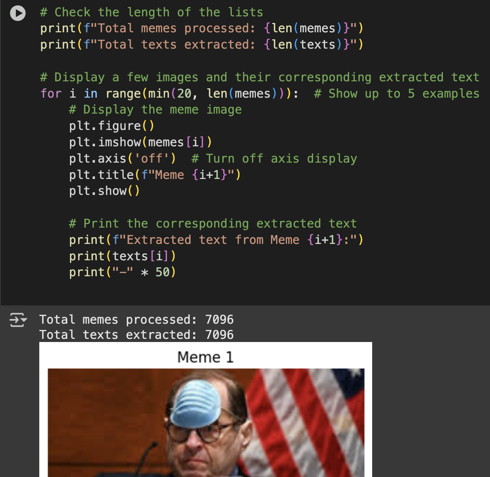

Memes are often used to spread humor, but they can also subtly or overtly spread hate. Traditional hate speech detection systems often fail to recognize harmful content when it’s embedded in images with sarcastic or ambiguous text. This project aims to detect hateful memes by combining both visual and textual cues using multi-modal deep learning models.
Hateful Meme
Hateful Meme
Non-Hateful Meme
Non-Hateful Meme
1. CLIP (Contrastive Language–Image Pretraining) by OpenAI was used.
2. CLIP understands both image and text together, making it ideal for meme interpretation.
3. The model was fine-tuned for classification into Harmful, Partially Harmful, and Harmless classes.
4. Text and image embeddings were fused and passed through a classifier head (MLP).
Used the Facebook Hateful Meme Dataset.
1.Contains 10k+ memes with aligned image and text captions.
2.Each meme is labeled as hateful or non-hateful.
3.Also experimented with a custom dataset structured into:
a.Harm-C/ (clear harm)
b.Harm_P/ (partially harmful)
c.Harmmeme-saved/ (non-harmful)
Achieved 85%+ accuracy on test data. The model successfully detected sarcasm-based hate in most cases. Confusion matrix showed improved performance with multi-class labeling (harmful, partially harmful, harmless).
How CLIP extracts text from images
Deployed as a web app using Flask. Users can upload a meme → model predicts its harmfulness.UI shows the image, prediction label, and confidence score.Currently hosted locally / on Colab.
Gained experience Gained understanding of multi-modal models.Understood the importance of contextual embedding in hate speech detection.Learned to handle imbalanced datasets and subtle bias in annotation.
Integrate more robust text sentiment analysis with OCR. Improve robustness using data augmentation and adversarial examples.Extend the system to support real-time social media monitoring.Deploy on cloud for wider accessibility.